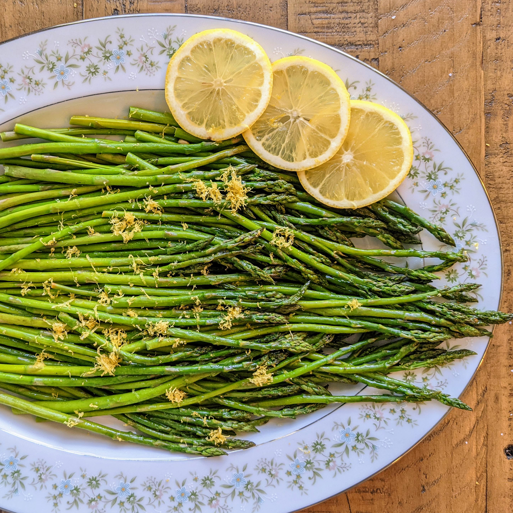

Oven Roasted Asparagus

Description
This is an easy to make recipe that takes about 10 minutes to prepare and about 50 minutes to cook.
It's a healthy and delicious dish.
This recipe is for 4 servings.
Ingredients
- 1 bunch thin asparagus spears, trimmed
- 3 tablespoons olive oil
- 3/2 tablespoons grated Parmesan cheese (optional)
- 1 clove garlic, minced (optional)
- 1 teaspoon sea salt
- 1/2 teaspoon ground black pepper
- 1 tablespoon lemon juice (optional)
Steps
-
Preheat an oven to 425 degrees F (220 degrees C).
-
Place the asparagus into a mixing bowl, and drizzle with the olive oil.
Toss to coat the spears, then sprinkle with Parmesan cheese, garlic, salt, and pepper.
Arrange the asparagus onto a baking sheet in a single layer.
-
Bake in the preheated oven until just tender, 12 to 15 minutes depending on thickness.
Sprinkle with lemon juice just before serving.